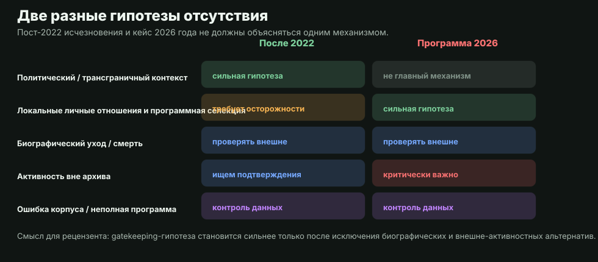
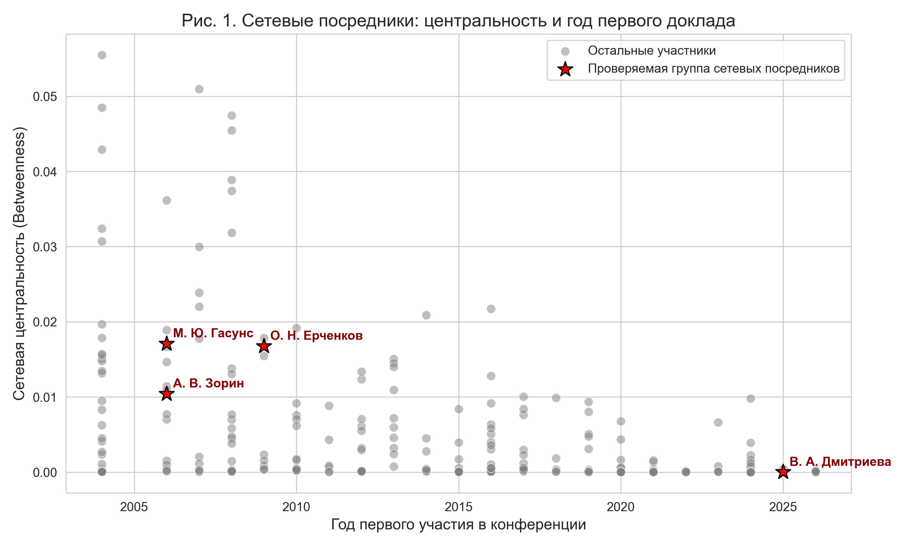
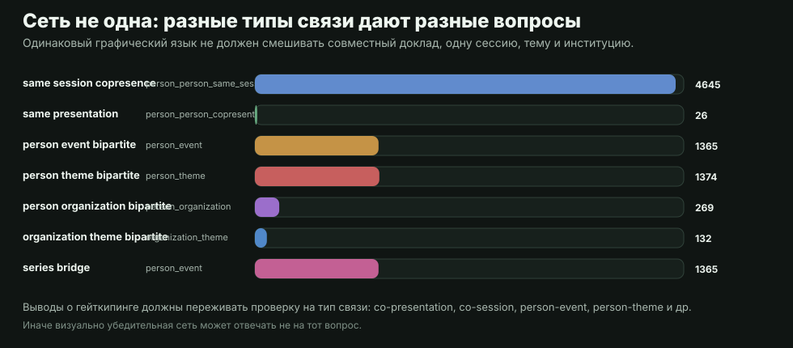

Наланда: позитивная модель допуска
В классическом и популярном употреблении gatekeeper не обязательно является цензором. В примере Наланды «привратник» описывается как интеллектуальный порог: он защищает вход в сложную ученую традицию, проверяет подготовку и тем самым поддерживает стандарты сообщества (обсуждение роли gatekeepers at Nalanda University).
Для рецензируемого текста это важная контрольная рамка: легитимный гейткипинг возможен, когда критерии понятны, соразмерны качеству работы и открыты для сильных, но неконвенциональных заявок. Нелегитимная версия начинается там, где контроль стандартов подменяется закрытым доступом, кумовством, фаворитизмом или наказанием за периферийность и отсутствие правильной аффилиации.
Где позитивная функция может исчезать
В более жесткой, но все еще проверяемой версии гипотезы старшее поколение не просто поддерживает стандарт, а отсекает наиболее ярких представителей среднего поколения уже после того, как они накопили собственную связность и методологическую самостоятельность. Тогда речь идет не о защите поля от слабых работ, а о программном ограничении сетевых посредников.
- Кумовство и фаворитизм: если состав программы объясняется близостью к организационному кругу лучше, чем качеством заявок, позитивная функция gatekeeping ослабевает.
- Неконвенциональные методы: корпусные данные и цифровые методы могут отсекаться не потому, что они ненаучны, а потому, что комитет не способен или не готов оценить их научную ценность; кейс Гасунса должен проверяться именно в этой рамке.
- Периферия и аффилиация: исследователь без классической институциональной опоры может быть уязвим не из-за качества работы, а из-за отсутствия узнаваемого институционального щита.
- Псевдонаука как слабое объяснение: если процедура подачи заявок скрыта и внешние участники фактически не знают, как войти в программу, фильтрация псевдонауки не выглядит главным механизмом отбора.
- Двойной стандарт строгости: высокая планка научной строгости не работает как оправдание, если старшим и «своим» участникам прощается снижение качества.
- Методологическая чистота: это может быть сильным принципом, но не доказательством само по себе; даже выпускники Восточного факультета СПбГУ и других сильных школ могут нарушать собственные методологические стандарты.
Смена сетевой парадигмы: от иерархии к распределенному посредничеству
В перспективе современной социологии науки и структурного анализа научных коммуникаций архив позволяет обсуждать поколенческий сдвиг: часть связности поля создается не только вертикальными институциями, но и горизонтальными сетевыми посредниками.
Однако анализ динамики графа научных связей за последние годы демонстрирует феномен «структурных дыр» (по Р. Бёрту) и формирование новых узлов плотности. Молодые ученые, обладая более гибкими междисциплинарными связями и цифровой мобильностью, начали выступать в роли сетевых посредников. Они соединяют ранее изолированные академические кластеры, инициируют горизонтальные коллаборации и формируют собственные площадки, в том числе за пределами аффилиаций РАН и классических университетов.
Теоретический фундамент: от монополии к сетевым сообществам
Текущие процессы можно описывать через несколько осторожных концептов социологии науки:
- Поле и символический капитал: программа конференции является не только расписанием, но и механизмом публичного признания.
- Boundary work: программная селекция может выглядеть как защита границ дисциплины, даже когда ее социальный эффект похож на исключение.
- Сетевые сообщества: горизонтальные группы могут сохранять активность вне одной площадки и тем самым становиться менее зависимыми от локального центра.
Что именно проверяется
Кейс 2026 года не следует смешивать с пост-2022 исчезновениями из корпуса. После 2022 года часть отсутствий может быть связана с политическим контекстом вокруг РФ и эмиграцией из РФ, или невозможностью принять участие из недружественных стран. В 2026 году проверяется другой механизм: локальная программная селекция и личные отношения внутри поля.

Методология визуализации и доказательная база
Для наглядной демонстрации процесса используется сетевой анализ. Betweenness centrality здесь читается не как «качество ученого», а как мера того, насколько часто участник оказывается связующим звеном между частями наблюдаемой конференционной сети.

Не одна сеть, а несколько типов связей
Рецензентская защита аргумента зависит от того, не смешиваем ли мы разные типы связи. Совместный доклад, одна сессия, общая тема, общее событие и общая институция отвечают на разные вопросы.

Кейс 2026 года: проверка нулевой гипотезы
В кейсе 2026 года проверяется синхронное отсутствие из программы пула активных исследователей молодого и среднего поколения: М. Гасунс, О. Ерченков, В. Дмитриева, А. Зорин и Сизова как строка дополнительной идентификации. Имена приводятся для аудита источников; интерпретация остается структурной, а не персонально-обвинительной.
Нулевая гипотеза проста: эти авторы могли снизить активность, сменить тему, не подать заявку или выйти из поля. Гипотеза институционального фильтра становится сильнее только если внешние источники показывают продолжающуюся активность, а программа одновременно теряет именно связующую группу. Этот шаг должен быть оформлен как отдельная таблица внешней проверки, а не как риторическое утверждение.
Осторожная формула для рецензируемого текста: «наблюдаемая конфигурация совместима с гипотезой институционального фильтра, но не доказывает мотив; для усиления вывода нужны внешние данные об активности исключенной группы и документированная проверка альтернативных объяснений».
Внесетевые отношения, которые не выводятся из совместных докладов или сессий, вынесены в отдельную страницу. Редакционные решения по аудитории, именованию людей и силе утверждений вынесены в русский мета-документ и английскую версию.